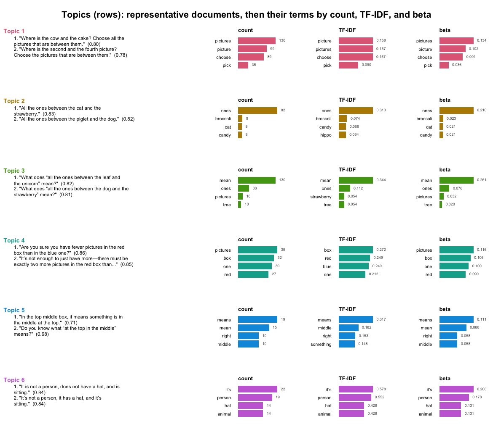

Vignettes and guides
Vignettes
Guides
- Choosing the number of topics and the granularity
- Segmenting long documents
- Preparing and cleaning a corpus
- Describing and naming topics
- Assigning new documents and topic mixtures
- Models, the cache, and custom models
- Parallel and high-throughput topic modeling
- Verification: Python parity and determinism
Case studies
Overview
sbert fits topic models of texts from their sentence embeddings. A sentence embedding places a text in a space where texts with similar meaning lie close together, whatever words they use (Reimers & Gurevych, 2019), so topics found in that space group texts by what they mean rather than by the words they share. Each topic is described by its most typical texts and by its distinctive terms, scored with class-based TF-IDF (Grootendorst, 2022). Topics can be fitted to whole documents or to their sentences, clauses or phrases, compared across numbers of topics by coherence and diversity, and used to assign new texts and give each document a mixture of topics.
The embeddings come from pretrained models, each fixed to one version (see models()). A model is downloaded only when it is first needed, and the bundled feedback_embeddings let every topic-model function run without any download.
The method
Each text is encoded as an embedding and scaled to unit length, so that the dot product of two embeddings is their cosine similarity. The normalized embeddings are partitioned into topics by k-means (Lloyd, 1982), started from deterministic farthest-point centers, so the same input always gives the same topics. A topic is described in two ways. Its representative texts are those nearest its center, and the most central one labels the topic. Its terms are scored by class-based TF-IDF (Grootendorst, 2022), which treats all texts of a topic as one document:
where is the frequency of term in topic , normalized by the topic’s length, is the frequency of across all topics, and is the average number of words per topic. A term scores high when it is frequent in one topic and rare in the others. Terms depend only on the assignments and the text, so they can be re-weighted without refitting.
Installation
install.packages("sbert")
# development version
install.packages("remotes")
remotes::install_github("sonsoleslp/sbert")Nothing is downloaded when the package is installed or loaded. Encoding needs the ONNX Runtime and a model, each downloaded once and on request:
Texts are tokenized with each model’s own Hugging Face tokenizer through tok and encoded by an ONNX graph through onnxr; pooling and normalization are done in R, with no Python. Each of the 14 models is pinned to a fixed revision and its files are verified by SHA-256.
Example
The package bundles feedback_translations, AI-generated feedback messages from a mathematics learning application, and feedback_embeddings, the embeddings of its first 600 distinct English messages, so the example below runs without a model. dedupe() keeps one copy of each repeated message and counts its occurrences in n; compare_topics() fits one model per candidate number of topics.
library(sbert)
corpus <- head(dedupe(feedback_translations, column = "translation"), 600)
sweep <- compare_topics(corpus, column = "translation",
n_topics = c(4, 6, 8),
embeddings = feedback_embeddings)
summary(sweep)
#> Topic-count comparison: highest mean npmi coherence per level
#>
#> segment n_candidates min_topics max_topics best_n_topics coherence topic_diversity
#> document 3 4 8 6 -0.104 0.917
#> explained all_converged
#> 0.226 TRUESix topics have the highest coherence. fitted() takes that model without refitting, and topic_sizes() counts each topic’s distinct messages and, with weights = "n", every time a message was shown:
topic_model <- fitted(sweep, n_topics = 6)
topic_sizes(topic_model, weights = "n")
#> topic label n_documents
#> 1 1 Where is the cow and the cake? Choose all the pictures... 223
#> 2 2 All the ones between the cat and the strawberry. 133
#> 3 3 What does “all the ones between the leaf and the... 131
#> 4 4 Are you sure you have fewer pictures in the red box than... 49
#> 5 5 In the top middle box, it means something is in the... 37
#> 6 6 It is not a person, does not have a hat, and is sitting. 27
#> proportion n_weighted weighted_share
#> 1 0.3717 267 0.3608
#> 2 0.2217 162 0.2189
#> 3 0.2183 138 0.1865
#> 4 0.0817 76 0.1027
#> 5 0.0617 57 0.0770
#> 6 0.0450 40 0.0541With a downloaded model the same model is fitted from the text alone, topics(corpus, n_topics = 6, column = "translation"). The fit report shows each topic’s most typical messages and its distinctive terms:
plot(topic_model, type = "fit", n_terms = 4, n_representatives = 2)
plot of chunk topics-fit
Authors and citation
sbert is written by Mohammed Saqr and Sonsoles López-Pernas. Sonsoles López-Pernas maintains the package. Questions and bug reports can be submitted through the repository issue tracker. The package citation is available through citation("sbert").
Grootendorst, M. (2022). BERTopic: Neural topic modeling with a class-based TF-IDF procedure. arXiv:2203.05794.
Lloyd, S. P. (1982). Least squares quantization in PCM. IEEE Transactions on Information Theory, 28(2), 129–137. https://doi.org/10.1109/TIT.1982.1056489
Reimers, N., & Gurevych, I. (2019). Sentence-BERT: Sentence embeddings using Siamese BERT-networks. Proceedings of EMNLP-IJCNLP 2019, 3982–3992. https://doi.org/10.18653/v1/D19-1410